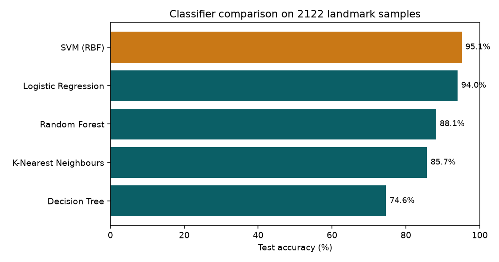
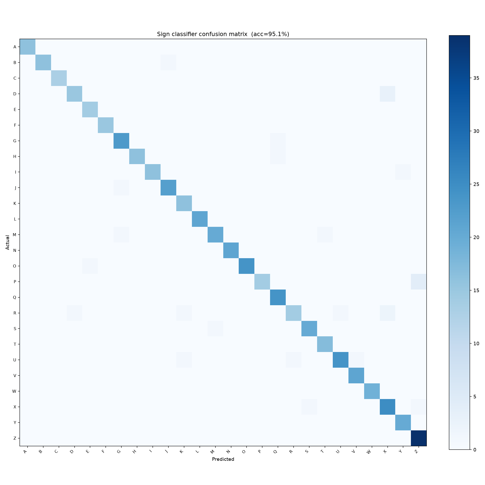

A real-time sign language translator
from camera gesture to spoken and translated text
Vani-Setu means “voice-bridge”: one hand in front of a webcam is turned into words, speech, and translation.
| Project | Vani-Setu — Sign Language Interpreter (college iteration) |
| Team size | 3 members |
| Repository | https://github.com/ShadowAN-AB/Vani_Setu |
| Run command | ./run.sh → http://127.0.0.1:5001 |
| Spell-mode accuracy | 95.1% held-out (RBF SVM, 26 letters, 2122 samples) |
Write your names here before printing / submitting
| Member | Slice of the product | Name | Roll no. |
|---|---|---|---|
| 1 | Live Spell path — camera UI, classify API, SVM features | ||
| 2 | Product path — login UI, OTP/translate APIs, phrase/ISL rules | ||
| 3 | Data path — record/practice UI, collect/train APIs, evaluation |
Every member worked on frontend + backend + ML. The slice is which user journey they own, not a single layer of the stack.
| 1. | Abstract and problem |
| 2. | Objectives |
| 3. | How the system works (architecture) |
| 4. | Technologies and why they were chosen |
| 5. | Team division and individual contributions |
| 6. | Module details (frontend, backend, ML) |
| 7. | Dataset, training, and results |
| 8. | Limitations, ethics, and future work |
| 9. | How to run and what to demo |
| 10. | Viva questions and answers by member |
| 11. | References |
Sign language is a complete language, not a code for English. Most hearing people cannot read it, so a deaf or hard-of-hearing person often needs a human interpreter. That is not available in every classroom, office, or kiosk. Vani-Setu is a camera-based prototype that tracks one hand, maps the pose to a word or letter, builds a sentence, speaks it, and can translate it into 25+ written languages.
The original open-source project was a 2019 hackathon CNN that classified cropped hand images. In this college iteration the working product is a browser app: MediaPipe extracts 21 hand landmarks on the device, Spell mode uses a trained Support Vector Machine, Phrase and simplified ISL modes use rule-based finger geometry, and a Flask server handles login, translation, dataset collection, and retraining.
Video never leaves the laptop. Only OTP, translation text, landmarks for training, and classify requests go to Flask on localhost.
Camera
→ Browser (index.html)
MediaPipe Hand Landmarker → 21 (x, y, z) points
Spell mode: POST /api/classify → SVM letter + confidence
Phrase / ISL: JavaScript finger rules → word
Buffer 14 frames, commit after 9 agree
Web Speech API (speak)
→ Flask (server.py, port 5001)
OTP login, translate, collect, train, health
→ Optional: Google Translate (text only)
Hindi offline fallback if the API fails
Landmark idea: MediaPipe returns 21 joints (wrist, thumb, index, middle, ring, pinky). We subtract the wrist so the feature vector is relative, not “where the hand sits in the frame”. That gives 21 × 3 = 63 numbers per frame — the input to the SVM.
Temporal voting: A single frame is noisy. The app keeps a buffer of 14 labels and only “commits” a sign when the same label appears in at least 9 of them. Then a short cooldown prevents double-counting.
| Layer | Tool | Why (viva answer) |
|---|---|---|
| Hand tracking | MediaPipe Hand Landmarker | Runs in the browser, 21 3D points, no GPU CNN required at demo time |
| Web UI | HTML / CSS / JS | One file the Flask server can ship; camera + TTS are already in the browser |
| Backend | Flask | Small Python API; easy to demo and retrain from the same process |
| Auth | Email OTP + CAPTCHA | Shows a login story without storing passwords; OTP prints in the terminal if SMTP is unset |
| Letter classifier | RBF SVM + StandardScaler | Beat RF, KNN, logistic regression, and a decision tree on the same features (95.1%) |
| Phrase / ISL | Finger-count geometry rules | Works with zero phrase samples; not a substitute for a real ISL lexicon |
| Translation | deep-translator + offline Hindi | 25+ languages; Hindi still works if Google is blocked |
| Speech | Web Speech API | No extra TTS server |
| Model I/O | joblib | Save/load the sklearn pipeline |
The old Keras CNN path (cnn_model_train.py, final.py) is still in the repo but is not the demo: training images and cnn_model_keras2.h5 are missing.
The team did not split as “one person frontend, one backend, one ML”. Each member owns a vertical slice of the product and therefore has work in all three layers. In the viva you can say: “I worked on frontend, backend, and ML for my slice; my teammates did the same for theirs.”
| Layer | Member 1 — Live Spell | Member 2 — Login, phrase, translate | Member 3 — Record, train, practice |
|---|---|---|---|
| Frontend | Camera, MediaPipe draw loop, Spell toggle, confidence bar, 14-frame vote | OTP/CAPTCHA screens, Phrase/ISL tabs, Sign Guide, language row, Speak | Record bar, Retrain button, Practice panel, suggestion chips, camera stop on logout |
| Backend | /api/classify, load sign_rf.joblib, return label + probability |
/api/send-otp, /api/verify-otp, /api/translate, /api/signs, signs.py |
/api/collect, /api/train, /api/health, run.sh, .env.example |
| ML | 63-D wrist-relative features; SVM at inference; confidence floor 0.50 | Rule-based Phrase/ISL geometry (a non-learned classifier); keep phrases out of the letter model | Dataset conversion, train/test split, 5-model comparison, confusion matrix, recording policy |
Contribution statement (read this in viva)
I own the live Spell journey from webcam to letter. On the frontend I wired MediaPipe, the skeleton overlay, Spell mode, the confidence bar, and majority voting. On the backend I own /api/classify. On the ML side I own the 63-D feature used at inference and the 0.50 probability cutoff that decides when to trust the SVM versus letter rules.
Frontend
HandLandmarker in VIDEO mode, one hand, local hand_landmarker.task.predict_proba.Backend
POST /api/classify accepts 21 landmarks, calls landmarks_to_features, runs the loaded sklearn pipeline, returns label and confidence.ML
Concepts: MediaPipe landmarks; client-side video vs server-side classify JSON; majority vote; SVM at predict time; confidence vs accuracy.
Contribution statement
I own the product around the recognizer: getting a user in, switching Phrase/ISL, showing the Sign Guide, and translating/speaking the sentence. Frontend: login and output UI. Backend: OTP and translate APIs. ML: the rule-based pose classifier (finger geometry) and the design choice that Phrase/ISL are not stuffed into the A–Z SVM.
Frontend
sessionStorage login flag.Backend
/api/send-otp and /api/verify-otp: 6 digits, 5 min expiry, rate limit, attempt cap; terminal print if SMTP is empty./api/translate via deep-translator, cache, Hindi OFFLINE_HI fallback in signs.py./api/signs and /api/languages so the UI does not hard-code every catalogue string twice..env, not in git.ML
Concepts: OTP vs passwords; REST; translation APIs vs offline fallback; rule-based vs learned models; ethics of claiming “ISL translator”.
Contribution statement
I own the loop that improves the model and the classroom extras around it. Frontend: dataset recorder, Retrain button, Practice mode, word suggestions, releasing the webcam. Backend: collect/train/health and run.sh. ML: building landmarks.csv, comparing five models, writing the confusion matrix, and the two-file recording policy.
Frontend
/api/train, shows accuracy toast).stopCamera() on logout / pagehide so the Mac LED turns off.Backend
/api/collect: kind=letter → landmarks.csv; kind=phrase → landmarks_phrases.csv./api/train: subprocess train_classifier.py, mutex (second click → 409), hot-reload joblib./api/health and /api/model-status for the pre-demo check.run.sh: venv, requirements_web.txt, start Flask.ML
train_classifier.py: stratified 75/25, StandardScaler + SVM, reports/.compare_models.py: SVM 95.1% vs logistic 94.0%, RF 88.1%, KNN 85.7%, tree 74.6%.Concepts: train/test and stratification; cross-validation; confusion matrix; overfitting; why we compare models instead of picking one by name; subprocess training; dataset licence.
main, .gitignore (venv, .env, raw HF dump, joblib weights).DEMO_AND_VIVA.md.Email → OTP → simple math CAPTCHA → sessionStorage flag. This is a classroom gate, not production identity. Session is per browser tab family and is not a signed JWT.
| Mode | Method | Examples |
|---|---|---|
| Spell + ML loaded | SVM on 63-D vector, threshold 0.50, then vote | A–Z (J/Z weak) |
| Spell fallback | Finger geometry rules | L, V, W, B, O, … |
| Phrase (ASL) | Rules only | Hello, Stop, Peace, OK, I Love You |
| ISL tab | Simplified one-hand rules | Namaste, Thank You, Water, Help |
Practice asks for a random letter and scores holds. Suggestions appear after two letters of the current word (local dictionary — not a cloud LLM).
Public set: ASL Now Fingerspelling Landmarks (MediaPipe JSON, MIT). Converted to wrist-relative 63-D rows. 2122 samples, 26 classes, 1591 train / 531 test, stratified, seed 42.
| Model | Test accuracy | Macro F1 | 5-fold CV |
|---|---|---|---|
| SVM (RBF) | 95.1% | 0.953 | 94.1% ± 0.5% |
| Logistic Regression | 94.0% | 0.940 | 92.5% ± 0.6% |
| Random Forest | 88.1% | 0.879 | 87.9% ± 2.0% |
| K-Nearest Neighbours | 85.7% | 0.853 | 84.9% ± 1.2% |
| Decision Tree | 74.6% | 0.739 | 74.8% ± 2.1% |
SVM was chosen because it won on held-out accuracy and cross-validation, and probability=True feeds the on-screen confidence bar. The saved pipeline is small (~1 MB) compared with the earlier Random Forest file (~22 MB).


If they ask “is 95.1% the live camera accuracy?” Answer: it is held-out accuracy on the landmark dataset. Live accuracy depends on lighting, camera, and how close your pose is to the training set. That is why we use a confidence floor and frame voting.
landmarks_phrases.csv.Future work: two-hand MediaPipe; sequence models for J/Z; custom phrase dataset; text-to-sign reverse mode; stronger auth.
cd Vani-Setu ./run.sh # Open http://127.0.0.1:5001 # OTP is printed in the terminal if email is not configured
Health check: curl -s http://127.0.0.1:5001/api/health should show ready_for_demo: true.
Demo order: login → camera → ML MODEL badge → Spell L/V/W/B and confidence bar → two letters + suggestion chip → Practice 3 letters → Phrase Hello/Peace/OK → Hindi + Speak → optional Retrain → logout (LED off).
Each person gets frontend, backend, and ML questions for their slice. Shared questions are in 10.1. Trick questions are in 10.5 — any of you may be asked those.
Q. What is Vani-Setu?
A real-time web prototype that maps one-hand camera poses to text and speech, with optional translation. Spell letters use an SVM; phrases use rules.
Q. Did each of you only do one layer?
No. Each of us did frontend, backend, and ML on a different user journey (Spell live path / login-phrase-translate / record-train-practice).
Q. Is this deep learning?
Hand tracking uses MediaPipe (ML inside). Our letter classifier is a classical SVM on landmarks, not a CNN on images. The old Keras CNN is not the running demo.
Q. Why not send video to the cloud?
Privacy, latency, and a classroom demo. Only short JSON landmarks or text hit localhost / Translate.
Frontend — What does MediaPipe return?
21 landmarks. Each has x, y (about 0–1 in the image) and z relative to the wrist. We draw joints on a canvas over the video.
Frontend — Why wait 9 of 14 frames?
To stop flicker. Without a vote, HELLO becomes HHEELLOO. Cooldown after commit stops repeats.
Frontend — What is the confidence bar?
The SVM’s predict_proba for the winning class, shown only in Spell. Phrase mode hides it because Phrase is not the letter model.
Backend — What does /api/classify receive and return?
JSON of 21 {x,y,z} points. Server builds the 63-D vector, calls predict / predict_proba, returns label and confidence. No video is uploaded.
Backend — What if the model file is missing?
Classify returns 404. The UI keeps using letter geometry rules so the demo still runs.
ML — Why 63 numbers, not a photo?
21 joints × 3 axes, wrist subtracted. Smaller than an image, less sensitive to background, enough for static fingerspelling, no GPU at demo time.
ML — Why 0.50 confidence?
Measured on held-out SVM probabilities: ~96% of correct predictions kept, ~69% of errors dropped, then frame voting filters the rest. Live camera accuracy is still not the same as 95.1% test accuracy.
ML — What model is running at classify time?
RBF SVM inside a StandardScaler pipeline, joblib file sign_rf.joblib (name is historical; the object is SVM).
Frontend — Walk through login.
Email → send OTP → six boxes → math CAPTCHA → sessionStorage flag. Classroom gate, not JWT production auth.
Frontend — Phrase vs Spell in the UI?
Phrase writes a whole word into the sentence. Spell appends a letter; Space finishes the word. ISL tab swaps the phrase rule table.
Frontend — How does Speak / translation appear?
Language tabs call /api/translate. Speak uses the Web Speech API on the English sentence (and translated text if another language is selected).
Backend — How does OTP work?
Six digits in a process dict, 300 s expiry, rate limit 60 s, max 5 tries. Empty SMTP → print code in the terminal. Restart Flask wipes OTPs.
Backend — How is translation done?
GoogleTranslator via deep-translator plus a small cache. If it fails and target is Hindi, use OFFLINE_HI in signs.py.
Backend — Why Flask?
sklearn is Python. Flask is a thin API around that. Django would be heavier for a prototype. Port 5001 avoids macOS AirPlay on 5000.
ML — Are Phrase and ISL “machine learning”?
They are a hand-crafted classifier: finger up/down plus distances. No weights. Still a valid method when you have no phrase dataset. MediaPipe underneath is ML.
ML — Why not put Hello into the SVM?
The SVM’s classes are A–Z. Adding Hello would mix tasks and wreck Spell accuracy. Phrase samples, if recorded, go to a separate CSV.
ML — Is your ISL real ISL?
No. One-hand classroom poses. Real ISL is two-handed and uses face and motion. We state that in limitations.
Frontend — How does recording work?
Pick a label, click Record, we POST landmarks every few frames. Spell writes letters; Phrase writes phrases. Counter aims at ~25 per sign.
Frontend — Practice mode and suggestions?
Practice prompts a random letter except J/Z and scores holds. Suggestions filter a local word list after two letters (HELLO, HELP, …). No LLM.
Frontend — Camera LED after stop server?
Flask does not own the webcam. We stop() tracks on logout/pagehide; the user must also close the tab.
Backend — Why two CSVs?
Letters → landmarks.csv for the SVM. Phrases → landmarks_phrases.csv so Hello never becomes an SVM class.
Backend — How does Retrain work?
POST /api/train runs train_classifier.py, 600 s timeout, lock so a second click gets 409, then reloads joblib in memory. No extra terminal.
Backend — What is /api/health?
Checks model loaded, hand_landmarker.task present, sample counts, translator import, email. ready_for_demo needs model + hand file.
ML — Why SVM over Random Forest?
Same features, same split: SVM 95.1% / 94.1% CV; RF 88.1%. Logistic was close (94%). We picked the measured winner. Trees overfit more here (74.6%).
ML — Train/test and F1?
25% test, stratified, seed 42. Accuracy is overall correct. Macro-F1 averages per letter so rare C is not hidden by many Zs. 5-fold CV checks luck of one split.
ML — Confusion matrix and J/Z?
Rows true, columns predicted. J and Z are motion letters; one static 63-D frame cannot encode a trace. Sequence models would be next.
ML — Did we collect the 2122 samples?
No. Public ASL Now landmarks (MIT), converted to our feature format. Our work is conversion, training, comparison, and the recorder for future own data.
Q. Can this replace an ISL interpreter?
No. One hand, static poses, toy phrase set. Accessibility demo only.
Q. Where is the neural network?
Inside MediaPipe’s hand detector. Our decision layer is SVM + rules. Unused Keras scripts are prior art we did not run.
Q. Is 95.1% the live camera accuracy?
It is held-out accuracy on the landmark CSV. Live depends on lighting and pose match. Threshold + voting exist because live is harder.
./run.sh works; OTP appears in the terminal; camera allowed.